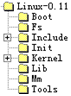
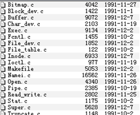
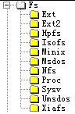
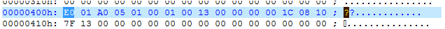
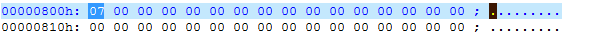
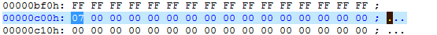
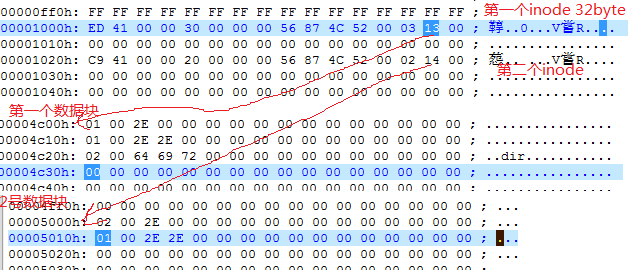
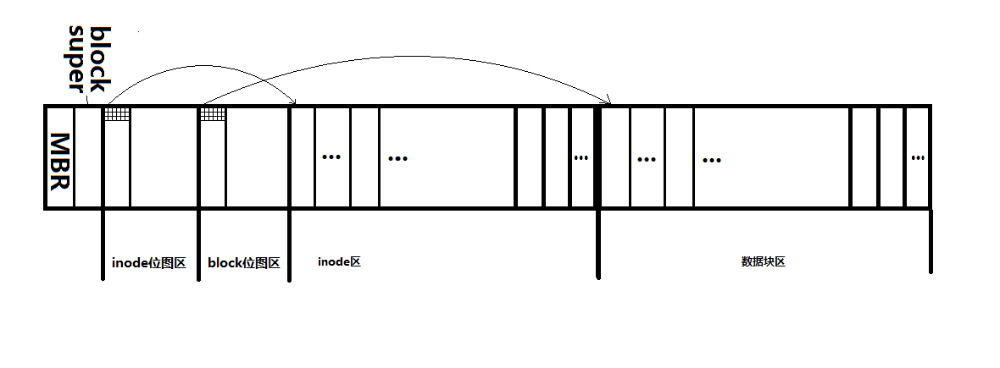

记录下学习过程，以便遗忘时可以顺着思路回忆起來。 一切尽在源码中！！！
深入学习minix文件系统是从linux的0.11内核版本开始的，更确切的说，把硬盘分区、文件系统、虚拟文件系统、网络文件系统等概念弄清楚也是在仔细阅读了内核源码才清晰的。还记得读明白0.11内核中minix源码以及之后的兴奋，以及之后阅读1.x版本内核中的ext，ext2和vfs等，每次读懂一些内容都会有种醒悟的感觉。
minix文件系统是源自minix操作系统的，linux0.11内核采用了这个现成的文件系统作为内核唯一支持的文件系统，当然在后续版本中就有了自己的ext等等其它文件系统。整个minix文件系统源码并不多。内容也非常精炼，非常适合开始学习文件系统。
0.11内核tree,非常精炼，这样让我们集中经历看核心代码。

0.11内核minix文件系统源码

0.11版本内核还没有将虚拟文件系统VFS从实际的文件系统中抽象出来，因为那时就只有一种文件系统，到后来0.95版本的内核才将VFS分离出来，为各种文件系统共存提供了框架，后来Remy Card为linux内核写了第一个专门的文件系统ext文件系统，并加入到0.96版本的内核中。这都是90年代初的事情了。。。可惜我现在才整明白。 文件系统的建立是独立于系统初始化的，换句话说，文件系统是事先就建立好的。比如安装系统时候你会给一个硬盘分区，然后格式化为一个文件系统，系统引导后初始化，是读取这个文件系统并将其挂载在自己的跟’/’上。
一、明确几个概念
- MBR、超级块、inode位图、block位图、inode区、block区
- MBR在第一个扇区中，放着bootloader（446Byte），分区表（16X4=64Bbyte）,Magic Number（0x55aa）
- inode存放文件的元数据
- block存放文件的内容
- 文件夹也是一个特殊的文件，也要占用一个inode以及一个或多个block，这些block就是文件夹的内容，里面记录了这个文件夹中放置了那些文件
- 位图用来分配inode和block
二、kernel-0.11内核初始化到根文件系统挂载
挂载一个文件系统首先的一步，就是读取超级块，然后读取第一个inode，也就是文件系统的’/’，有了这两步，这个文件系统基本就算挂载完了，以后可以正常读写这个文件系统了。 原始的0.11中的minix文件系统在一个软盘上，软盘其实可以理解为硬盘中的一个分区。
当系统还在内核初始化时，内核先初始化文件系统中的块设备模型，初始化PC兼容的硬盘，然后进入用户模式下的第一个init进程，在init进程中调用setup系统调用，其中进行了mount_root
setup记录引导阶段BIOS读到的硬盘参数，读分区表，
mount_root中主要调用read_super函数 ，
read_super最重要的就是读取超级块：
if (!(p=read_super(ROOT_DEV)))
panic("Unable to mount root");
read_super做为这一大堆函数中最实在的一个函数，它很务实的从硬盘上将超级块读到内存中。
read_super又分为几步
1.先分配一个super_block的数据结构
if (s = get_super(dev))
return s;
for (s = 0+super_block ;; s++) {
if (s >= NR_SUPER+super_block)
return NULL;
if (!s->s_dev)
break;
}
先在内存中找所指定设备的超级快是不是已经在内存中存在了，如果存在直接返回了。
如果不存在，则需要在内存中分配一个super_block用来存放从硬盘中读到的超级快。这里实在内核初始化mount_root，肯定不存在，要到块设备中读。0.11的内核中的super_block在内存中以数组的方式存在，最大支持八个，分配只是简单地扫描这个一维线性表，如果找个空闲的表项则停止。
#define NR_SUPER 8
struct super_block super_block[NR_SUPER];
2.利用read_super读到文件系统的超级块，由于现在系统只支持minix，所以这个函数就是读minix的super_block的，在后面的将vfs与具体的文件系统分开之后，这个函数就是一个分发者，它调用不同文件系统的读取超级快的函数:
if (!(bh = bread(dev,1))) {
s->s_dev=0;
free_super(s);
return NULL;
}
*((struct d_super_block *) s) =*((struct d_super_block *) bh->b_data);
brelse(bh);
if (s->s_magic != SUPER_MAGIC) {
s->s_dev = 0;
free_super(s);
return NULL;
}
然后读inode的位图所在的块和block位图所在的块：
block=2;
for (i=0 ; i < s->s_imap_blocks ; i++)
if (s->s_imap[i]=bread(dev,block))
block++;
else
break;
for (i=0 ; i < s->s_zmap_blocks ; i++)
if (s->s_zmap[i]=bread(dev,block))
block++;
else
break;
3.iget获得跟inode，这就是最重要的几步，这样系统已经知道了当前的’/’在哪里了，在以后一切都顺利了。
if (!(mi=iget(ROOT_DEV,ROOT_INO)))
panic("Unable to read root i-node");
mi->i_count += 3 ; /* NOTE! it is logically used 4 times, not 1 */
p->s_isup = p->s_imount = mi;
current->pwd = mi;
current->root = mi;
比如你用mkdir系统调用，就会根据open_namei找指定路径中父目录文件中有没有这么一个目录项，没有就创建一个目录项，
mkdir –>sys_mkdir；
rmdir ->sys_rmdir；
open对应创建新文件；
shell中的无名管道，也就是“|” 比如cat file1 | grep “hello”对应sys_pipe；
比如ls命令，就是调用read函数读取目录内容，按照minix的目录项解析；
比如rm，直接将目录项中sys_umlink就可以了，但是实际上文件还在硬盘上，只是用一般的方法下读不到了。
三、kernel-1.2.3内核根文件系统挂载
接下来以1.2.13的内核中的代码为例，说明minix文件系统是怎么挂载的，思想与上述基本相同，所不同的就是在1.2.13中内核从实际的文件系统中抽象出来一个虚拟文件系统VFS，由于内核支持众多文件系统，使用VFS作为接口与各个实际的文件系统进行“交流”.
1.2.13将VFS与实际文件系统实现分离开，如下为新增的各种文件系统类型：

在内核fork出第一个进程init内部，调用sys_setup，这里面主要是一些文件系统的注册函数，使得内核知道，我都支持些文件系统，也就是有哪些文件系统的操作函数集。
register_filesystem(&(struct file_system_type)
{minix_read_super, "minix", 1, NULL});
之后就是mount_root，如果不是作为根文件系统，那么就直接是sys_mount它们两者内部最重要的就是读取块设备上的文件系统的超级块。
-
分配超级块的数据结构
-
调用VFS中的
read_super获得超级快。sb = read_super(ROOT_DEV,fs_type->name,root_mountflags,NULL,1); if (sb) { inode = sb->s_mounted; inode->i_count += 3 ; /* NOTE! it is logically used 4 times,not 1 */ ... }
来看read_super内部是什么情况，这个VFS的read_super到底与之前“朴素”的read_super有何区别
static struct super_block * read_super(dev_t dev,char *name,int flags,
void *data, int silent)
{
…
if (!(type = get_fs_type(name))) {
printk("VFS: on device %d/%d: get_fs_type(%s) failed\n",
MAJOR(dev), MINOR(dev), name);
return NULL;
}
…
if (!type->read_super(s,data, silent)) {
s->s_dev = 0;
return NULL;
}
它其实就是一个分发者，它根据文件系统类型调用相应类型的读取超级块的实际的执行者，而执行者就是前面注册文件系统时候提供的函数。如下才是实际从硬盘进行“读取”这个动作的函数，读取的过程就是之前在0.11版本中的那样了，先用块设备驱动读进第一个块，然后再获取根inode。注意下面这段代码最后两行是非常重要的，它将minix_sops的操作函数集交给了内存中的super_block，这样系统以后就可以使用这个函数集读取特定文件系统（这里是minix文件系统）的inode了。
static struct file_system_type minix_fs_type = {
minix_read_super, "minix", 1, NULL
};
struct super_block *minix_read_super(struct super_block *s,void *data,
int silent)
{
…
if (!(bh = bread(dev,1,BLOCK_SIZE))) {
s->s_dev=0;
unlock_super(s);
printk("MINIX-fs: unable to read superblock\n");
MOD_DEC_USE_COUNT;
return NULL;
}
ms = (struct minix_super_block *) bh->b_data;
…
s->s_op = &minix_sops;
s->s_mounted = iget(s,MINIX_ROOT_INO);
四、实验
制作一个minix的文件系统，并挂载使用它，深入分析它的结构。
实验过程
使用boch虚拟机作为主要实验环境，在boch中运行0.11的内核的linux系统（这个实验环境可以在oldlinux网站找到）。 boch可以作为学习0.11版本内核的一个实验环境，oldlinux上使用这个内核搭建了一个简单系统，作为入门学习非常合适。接下来先制作一个影响文件模拟一个软盘。 将这个软盘插入到boch虚拟机中，启动boch中的linux系统，并在这个软盘上创建minix文件系统，挂载它并使用它，最后分析这个映像文件来分析minix文件系统结构。
实验步骤
1 先制作一个minix的映像文件
使用任意linux系统执行一下命令：
dd if=/dev/zero of=minix.img bs=1024 count=1440
这样1.44M的软盘就制作好了，这样制作出1.44M大小，也就是一个软盘大小的映像文件，文件内容全部是0.
2 将其安装到boch的floppy b里面，修改boch的配置文件
floppyb: 1_44="fd144.img", status=inserted
3启动boch
mkfs /dev/fd2 1024
mount /dev/fd2 /mnt
mkdir /mnt/dir
可以看到super_block如下

上图正好对应与super_block的内核数据结构。
struct super_block {
unsigned short s_ninodes;
unsigned short s_nzones;
unsigned short s_imap_blocks;
unsigned short s_zmap_blocks;
unsigned short s_firstdatazone;
unsigned short s_log_zone_size;
unsigned long s_max_size;
unsigned short s_magic;
/* These are only in memory */
struct buffer_head * s_imap[8];
struct buffer_head * s_zmap[8];
unsigned short s_dev;
struct m_inode * s_isup;
struct m_inode * s_imount;
unsigned long s_time;
struct task_struct * s_wait;
unsigned char s_lock;
unsigned char s_rd_only;
unsigned char s_dirt;
};
由上图可以看出s_magic为0x137F，挂载文件系统时要检查这个值，如下：
#define SUPER_MAGIC 0x137F
if (s->s_magic != SUPER_MAGIC) {
s->s_dev = 0;
free_super(s);
return NULL;
}
Inode block map

位图中显示有三个inode，bit0对应的0号不适用，1号就是根inode 2号是自己创建的“dir”的inode
Block map

也是有三个块，0块不用，一块是根目录的数据块，2号块是dir目录的数据块，尽管是一个空目录，但他还是占用了一个数据块，实际上这个块里面放着”.””..”两个目录项，指向当前目录和上层目录。
inode
这里放置了inode。

下面是一张比较完整的图：

上面记录了学习文件系统的过程，已备以后查看，不足之处还望指教。
===
参考资料
1 oldlinux